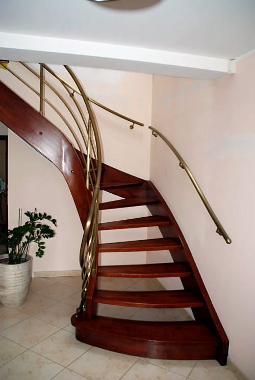
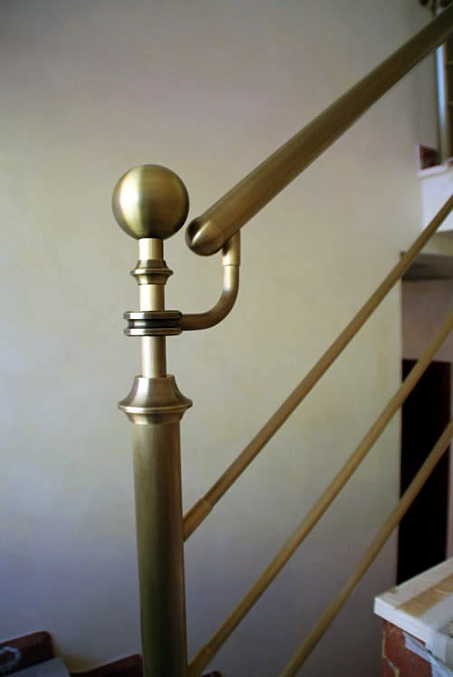
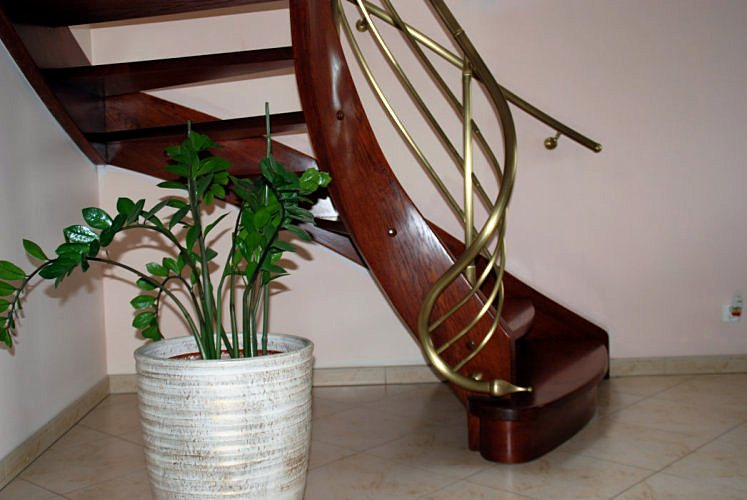

Pracownia w Skrzynkach koło Stęszewa, pod Poznaniem
Balustrady i karnisze gięte po łuku
Z mosiądzu i stali nierdzewnej, od 1989 roku. Gniemy rury po krzywoliniowym torze bez zmiany średnicy i bez osłabienia w zgięciu, a potem polerujemy, patynujemy albo matowimy.
Łuk, który zachowuje przekrój
Specjalnością pracowni jest gięcie rur po krzywoliniowym torze, z zachowaniem niezmiennej średnicy i parametrów wytrzymałościowych w zgięciach. Pochwyt prowadzi więc dłoń jednym, równym profilem przez cały bieg schodów, także na zakrętach i spocznikach.
Rury łączymy przez skręcanie. To technika, którą przez lata dopracowaliśmy tak, żeby połączenia nie przerywały linii balustrady.
- Materiały
- mosiądz, stal chromowo-niklowa (nierdzewna), także miedź
- Wykończenia
- polerowanie, patynowanie, matowienie
- Ochrona mosiądzu
- transparentny lakier proszkowy poliestrowy, w połysku albo w macie
Balustrady schodowe, tarasowe i balkonowe
Wykonujemy balustrady z mosiądzu, ze stali nierdzewnej i z miedzi, na życzenie łączone z drewnem albo z wypełnieniem ze szkła bezpiecznego. Każdą robimy na indywidualne zamówienie, według wymiarów i wytycznych klienta, do wnętrz nowoczesnych i klasycznych.
W ofercie są też pochwyty przyścienne oraz balustrady antybakteryjne Cu+, sprawdzające się w szpitalach, hotelach i biurowcach.
Karnisze gięte z mosiądzu i stali
Karnisz wygięty dokładnie po łuku okna, wykusza albo przejścia. Robimy je z mosiądzu i ze stali chromowo-niklowej, w kilkunastu rodzajach, z szerokim wyborem końcówek o różnych kształtach.
- karnisze pojedyncze i podwójne
- podwójne rozporowe
- skrętne
- rozety, czyli embrasy do upięcia zasłon
Meble i detale z mosiądzu
Mosiądz jest wytrzymały, odporny na korozję i łatwo utrzymać go w czystości, a przy tym daje się kształtować niemal dowolnie. Złotawy kolor ociepla wnętrze i dobrze wygląda przy szarościach, bieli i czerni.
Na indywidualne zamówienie wykonujemy:
- hokery barowe i bary
- wieszaki
- kolumny
- relingi kuchenne
- poręcze przyścienne
- pręty schodowe
Mosiądz może mieć połysk albo zostać pozostawiony sam sobie, wtedy pokrywa się naturalną patyną. Przy współpracy z architektem lub dekoratorem wnętrz podejmujemy się wykonania wystroju całego wnętrza.
Realizacje
Zdjęcia z dotychczasowych realizacji pracowni. Dotknij zdjęcia, żeby je powiększyć.
Dobierz wykończenie
Wybierz metal, kształt i wypełnienie. Model obok zmienia się od razu i można go obracać, a na końcu wyślesz gotowe zapytanie mailem albo SMS-em. Odpowiadamy z wyceną po rozmowie i pomiarze.

Wczytuję model 3D
Przeciągnij, żeby obrócićPrzesuń w bok, żeby obrócić
Mosiądz patynowany, schodowa gięta po łuku, pręty wzdłużne
Jak pracujemy
Prowadzimy całe zlecenie sami, od pomiaru do montażu. Jesteśmy otwarci na własne pomysły klientów i chętnie pracujemy z architektami.
- Pomiar
- Przyjeżdżamy i mierzymy schody, taras, balkon albo okno na miejscu.
- Projekt
- Przygotowujemy projekt techniczny i pokazujemy go na wizualizacji 3D, żeby można było wybrać wariant przed wykonaniem.
- Gięcie i wykonanie
- Gniemy, łączymy, szlifujemy i wykańczamy elementy we własnej pracowni w Skrzynkach.
- Dostawa i montaż
- Przywozimy i montujemy, a w razie potrzeby później serwisujemy.
- Obszar
- Najwięcej naszych realizacji jest w Poznaniu i w Wielkopolsce, ale pracujemy też dla klientów z innych części Polski i z zagranicy.
Pracownia w Skrzynkach
Na rynku jesteśmy od 1989 roku. Poza balustradami i karniszami wykonujemy wyroby metalowe dla budownictwa i przemysłu. Rozbudowany park maszynowy pozwala nam przyjmować też zlecenia usługowe.
Zapraszamy do zapoznania się z ofertą i do kontaktu.
Andrzej Skrzypiński
- Obróbka skrawaniem
- tokarki uniwersalne i rewolwerowe, automaty tokarskie, frezarki pionowe i poziome, strugarka, szlifierki do płaszczyzn i wałków, wiertarki
- Obróbka plastyczna
- giętarko-walcarki do rur, prasy mimośrodowe od 6 do 40 T, tłoczenie na prasach hydraulicznych 10 i 40 T, walcarka do blachy, nożyce gilotynowe 2 m do 3,5 mm, hartowanie i wyżarzanie
- Szlifiernia i polernia
- szlifowanie na pasach bezkońcowych, matowanie, polerowanie, 18-stanowiskowy automat polerski, chemiczne patynowanie metali kolorowych
- Lakiernia proszkowa
- aplikacja GEMA, piec 3000 × 1000 × 1000 mm, transparentny poliester w połysku i macie (specjalność: lakierowanie mosiądzu), kolory z palety RAL
- Spawalnia
- spawanie w osłonie argonu mosiądzu, aluminium i miedzi, spawanie stali i żeliwa
Kontakt i dojazd
BALUSTRADY SKRZYPIŃSKI Sp. z o.o.
Skrzynki, ul. Leśna 2
62-060 Stęszew
- Komórka
- 600 458 425
- Tel./fax
- 61 819 61 97
- Wystawa
- stała wystawa i sprzedaż w godz. 6-16
NIP 777-32-48-102 · REGON 361126394